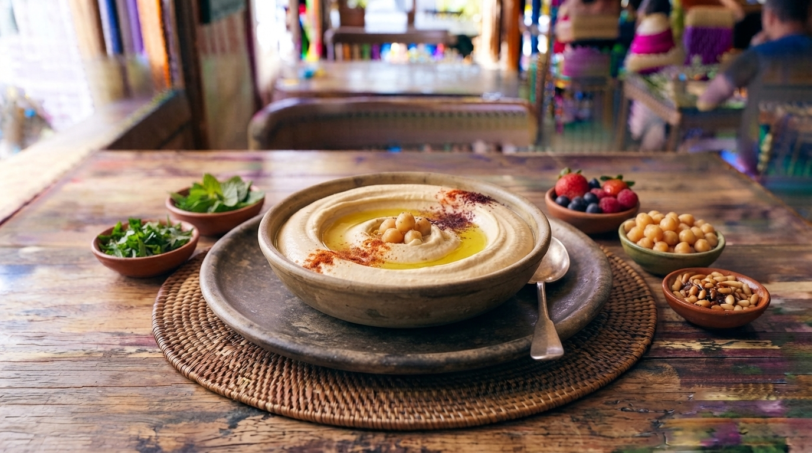

Hummus Cremoso Tradicional
Uma pasta aveludada e rica de grão-de-bico cozido, tahini (pasta de sésamo), sumo de limão e alho, servida com azeite de oliva, cominhos e pão pita fresco.

⏱️ Tempo: 20min
🍽️ Rendimento: 4 porções
🔥 Dificuldade: Fácil
Ingredientes
- 2 chávenas de grão-de-bico cozido (sem pele para maior suavidade)
- 1/3 de chávena de tahini de boa qualidade
- Sumo de 1 limão sumo fresco
- 2 dentes de alho
- 2 a 3 cubos de gelo (ajudam a deixar o hummus cremoso)
- Azeite, cominhos e paprica para servir
Modo de Preparo
- Coloque o grão-de-bico cozido num processador de alimentos e bata até começar a triturar.
- Adicione o tahini, o sumo de limão, o alho e o sal. Bata bem.
- Com o processador ligado, adicione os cubos de gelo um a um. Isto criará uma textura incrivelmente cremosa e clara.
- Transfira para um prato fundo, faça uma cavidade no centro com as costas de uma colher e regue generosamente com azeite, paprica e cominhos. Sirva com pão pita.